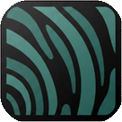

Nenhuma transcrição ainda
Escolha um modo de sessão, grave ou anexe um arquivo.
Use Espaço para gravar rapidamente.

Escolha um modo de sessão, grave ou anexe um arquivo.
Use Espaço para gravar rapidamente.
🟢 Whisper Large v3 Turbo · $0.04/hr · 2.000 req/dia grátis · chave sem expiração = "No expiry"
Transcrever é ouvir. Já as lentes e receitas (resumo, e-mail, flashcards…) precisam de uma IA que pensa. Escolha quem faz esse trabalho:
💡 Padrão: Groq (grátis) — se você já configurou a chave Groq na aba Transcrição, a IA de texto já funciona sozinha, sem precisar mexer aqui.
Usa a mesma Groq Key da aba Transcrição — grátis, sem custo extra.
Usa a mesma OpenAI Key da aba Transcrição.
Recomendamos fortemente o Z.ai: é realmente grátis, sem pegadinha e sem limite de tempo.
:free não custa nada (até 50 usos/dia). Precisa criar conta grátis.Identificar locutores automaticamente
Transcrição segmentada por pessoa — Profissional, Paciente, etc.Escolha o provedor de diarização:
Usa a mesma OpenAI Key já configurada acima. Modelo: gpt-4o-transcribe com diarização. Mesmo preço: $0.006/min.
Usada para identificar automaticamente quem é o profissional e quem é o paciente. Custo: ~$0.001/consulta.
🤝 Modo assistido
Guias amigáveis nas funções avançadas (diarização, provedores, primeiros usos). Recomendado.Suas chaves ficam só no seu navegador — se ele "esquecer" (cache limpo, troca de aparelho), você as perde de vez. Pra não digitar tudo de novo: baixe um backup protegido por senha e guarde num lugar seguro (e-mail pra você mesmo, nuvem, pendrive). Se um dia precisar reconfigurar, é só restaurar esse arquivo aqui — sem digitar as chaves de novo.
Só visualização — não apaga nenhuma configuração.
⚠️ Tem certeza? Isso apaga chaves de API, idioma, tema, receitas e todos os ajustes.
Vox · My Transcriber
Qual modelo deseja usar?
Modelos menores são mais rápidos.
Para transcrever suas gravações, o app precisa acessar o microfone do seu computador.
Clique no botão abaixo e depois em "Permitir" quando o Chrome perguntar.
Isso só acontece uma vez.
O Groq oferece transcrição com Whisper completamente gratuita — 2.000 gravações por dia, sem cobrar nada, para sempre. Leva menos de 2 minutos configurar.
🔒 A chave fica salva só no seu dispositivo — nunca sai daqui.
v
Transcrição de áudio com foco em privacidade. Seus dados nunca passam pelos nossos servidores — porque não temos servidores.
Envie o link para que outras pessoas possam usar o app no próprio dispositivo.